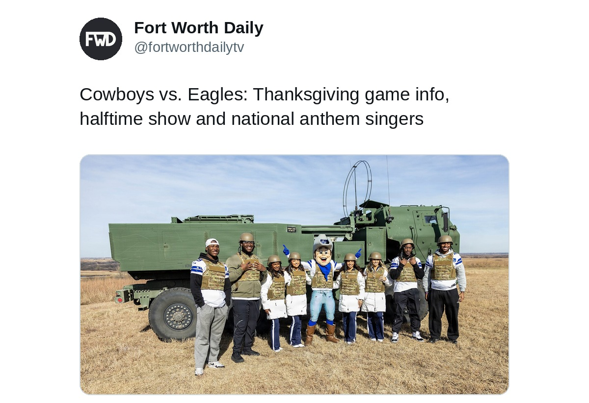

FWD
Fort Worth Daily
Just now · 🌎 · sports · template writer
Just now · 🌎 · sports · template writer
The NFL's Thanksgiving Day tradition features the Dallas Cowboys against NFC East rival Philadelphia Eagles.

FWD
story + scoring
{
"source": "WFAA Sports",
"kind": "rss",
"score": 1.0264,
"relevance": 2,
"url": "https://www.wfaa.com/article/sports/nfl/cowboys/dallas-cowboys-game-today-thanksgiving-eagles-watch-stream-live-halftime-show-national-anthem-singer/287-3c692e3e-4f46-4b2a-8e23-f32418737b9b",
"image_license": "wikimedia-cc",
"image_credit": "Photo: JaoTorey Johnson via Wikimedia Commons (Public domain)"
}